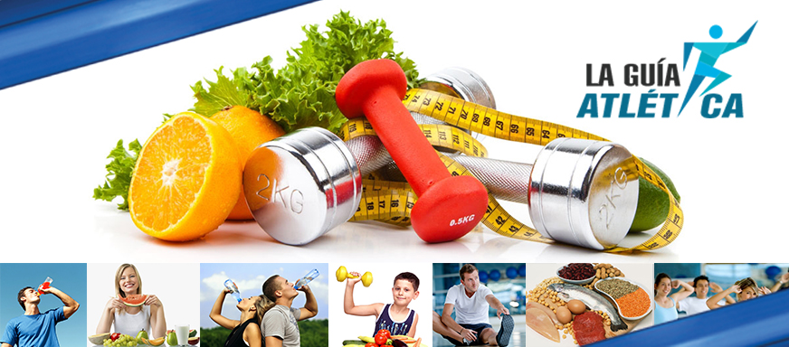

NUTRICIÓN
| #1 ¡Empieza desde los entrenamientos! | #2 Consume suficiente energía | #3 Consume muchos carbohidratos |
|
Mayores avances en tu rendimiento. Acelerar la recuperación entre sesiones. Ensayar estrategias de alimentación e hidratación para la competencia. |
Perderás músculo. Tendrás fatiga crónica. Tendrás fatiga crónica. |
Los alimentos ricos en carbohidratos son los cereales: trigo, maíz, avena, arroz, amaranto y derivados como pan, tortilla, pastas, galletas, barras de cereal, etc, los tubérculos, como la papa, etc, las leguminosas, como el frijol, haba, lenteja, las frutas y las verduras. |